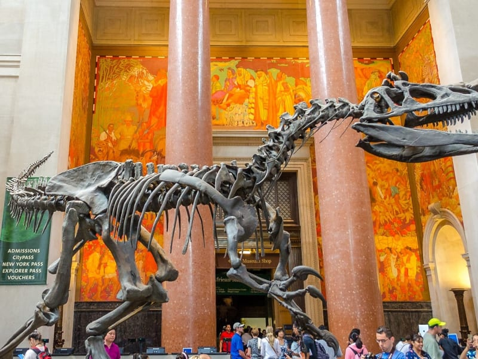
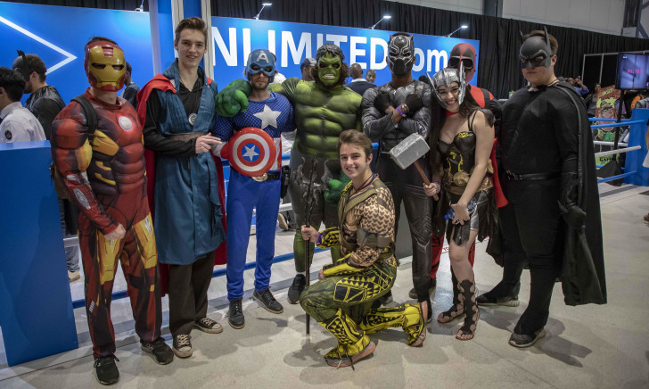
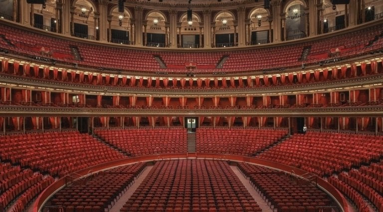

World Magazine
Search
Log In
Magazine
Newsletter
About Us
HOME
SPORTS
CULTURE
POLITICS
TECH
Record number of people visited the National history museum
This year the American Museum of Natural History has seen an increese in visitors by 14%.
A record number of tickets for children has been sold already this year.
Museum likely to end the year with red numbers anyway.
Culture
By: Mark Test

American Museum of Natural History
Comic-Con South Africa: Top culture festival showcases homegrown superheroes
In a vibrant celebration of pop culture, Comic-Con South Africa took center stage, bringing to light a plethora of homegrown superheroes and fantastical worlds.
Culture
By: Mark Test

Comic Con in South Africa
Royal Albert Hall Embarks on Transformation
In a bold and ambitious endeavor, the Royal Albert Hall, a beloved and iconic venue, has embarked on a journey of transformation and revitalization. The historic hall, known for its grandeur and rich cultural heritage, is undergoing a comprehensive redevelopment to ensure its continued prominence on the world stage.
Culture
By: Mark Test

Royal Albert Hall